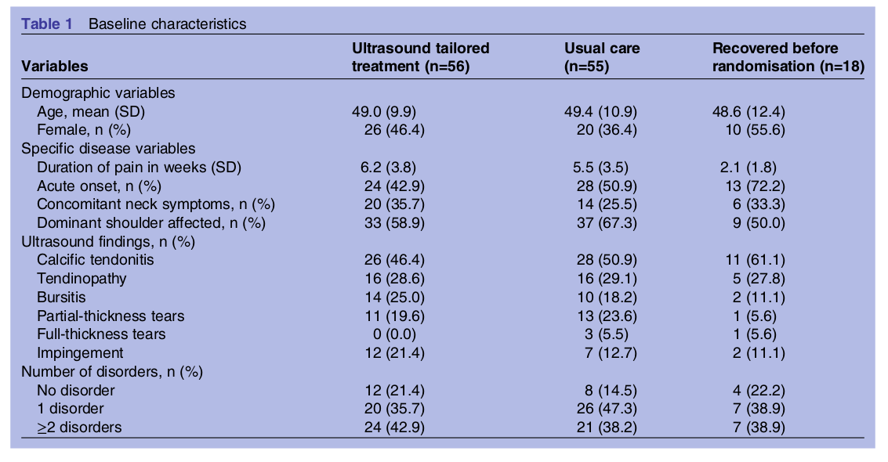
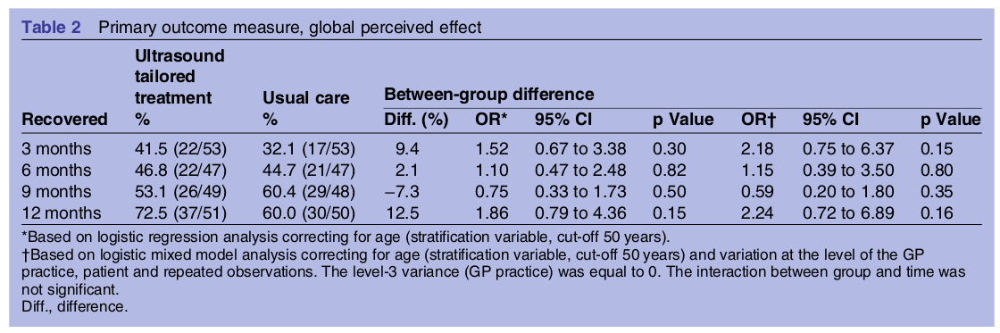
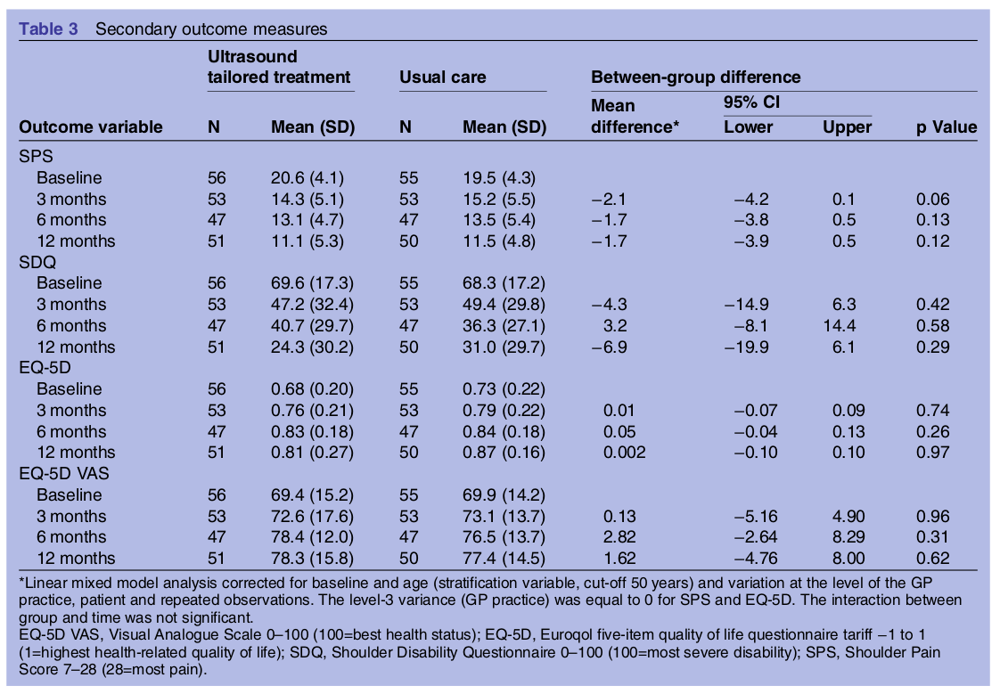
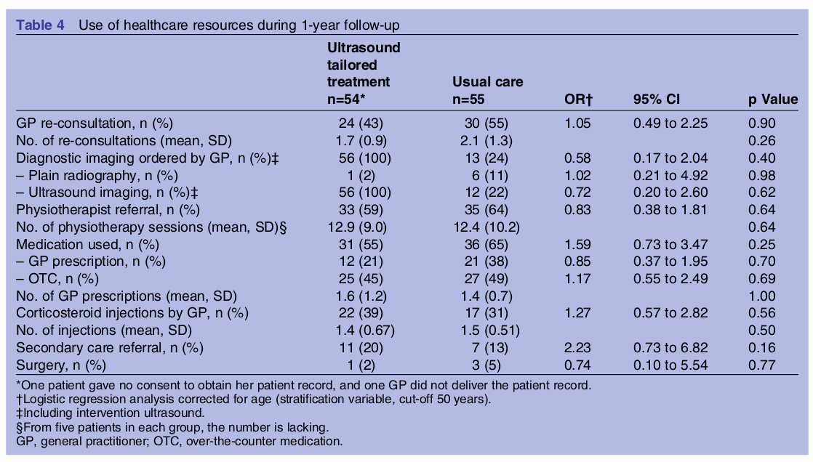
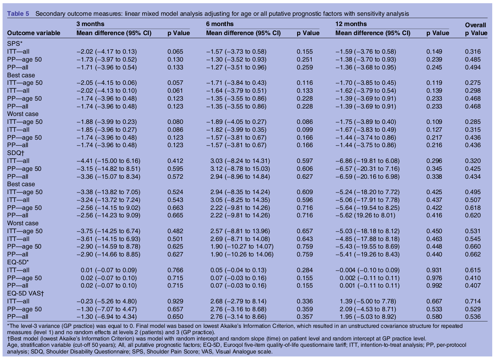

|

../../cm-ucl/corpus-oa-pmr-v02/10.1136_bmjopen-2016-011048/tables/table1/table.png
|
| Variables |
Ultrasound tailored treatment (n=56) |
Usual care (n=55) |
Recovered before randomisation (n=18) |
| Demographic variables |
|
|
|
| Age, mean (SD) |
49.0 (9.9) |
49.4 (10.9) |
48.6 (12.4) |
| Female, n (%) |
26 (46.4) |
20 (36.4) |
10 (55.6) |
| Specific disease variables |
|
|
|
| Duration of pain in weeks (SD) |
6.2 (3.8) |
5.5 (3.5) |
2.1 (1.8) |
| Acute onset, n (%) |
24 (42.9) |
28 (50.9) |
13 (72.2) |
| Concomitant neck symptoms, n (%) |
20 (35.7) |
14 (25.5) |
6 (33.3) |
| Dominant shoulder affected, n (%) |
33 (58.9) |
37 (67.3) |
9 (50.0) |
| Ultrasound findings, n (%) |
|
|
|
| Calcific tendonitis |
26 (46.4) |
28 (50.9) |
11 (61.1) |
| Tendinopathy |
16 (28.6) |
16 (29.1) |
5 (27.8) |
| Bursitis |
14 (25.0) |
10 (18.2) |
2 (11.1) |
| Partial-thickness tears |
11 (19.6) |
13 (23.6) |
1 (5.6) |
| Full-thickness tears |
0 (0.0) |
3 (5.5) |
1 (5.6) |
| Impingement |
12 (21.4) |
7 (12.7) |
2 (11.1) |
| Number of disorders, n (%) |
|
|
|
| No disorder |
12 (21.4) |
8 (14.5) |
4 (22.2) |
| 1 disorder |
20 (35.7) |
26 (47.3) |
7 (38.9) |
| ≥2 disorders |
24 (42.9) |
21 (38.2) |
7 (38.9) |
../../cm-ucl/corpus-oa-pmr-v02/10.1136_bmjopen-2016-011048/tables/table1/table.svg.html
|
|

../../cm-ucl/corpus-oa-pmr-v02/10.1136_bmjopen-2016-011048/tables/table2/table.png
|
|
|
|
|
|
|
|
Recovered |
Ultrasound tailored treatment % |
Usual care % |
| 3 months |
41.5 (22/53) |
32.1 (17/53) |
9.4 |
1.52 |
0.67 to 3.38 |
0.30 |
2.18 |
0.75 to 6.37 |
0.15 |
| 6 months |
46.8 (22/47) |
44.7 (21/47) |
2.1 |
1.10 |
0.47 to 2.48 |
0.82 |
1.15 |
0.39 to 3.50 |
0.80 |
| 9 months |
53.1 (26/49) |
60.4 (29/48) |
−7.3 |
0.75 |
0.33 to 1.73 |
0.50 |
0.59 |
0.20 to 1.80 |
0.35 |
| 12 months |
72.5 (37/51) |
60.0 (30/50) |
12.5 |
1.86 |
0.79 to 4.36 |
0.15 |
2.24 |
0.72 to 6.89 |
0.16 |
../../cm-ucl/corpus-oa-pmr-v02/10.1136_bmjopen-2016-011048/tables/table2/table.svg.html
|
|

../../cm-ucl/corpus-oa-pmr-v02/10.1136_bmjopen-2016-011048/tables/table3/table.png
|
|
|
Outcome variable |
N |
Mean (SD) |
N |
Mean (SD) |
Mean difference* |
p Value |
| SPS |
|
|
|
|
|
|
|
|
| Baseline |
56 |
20.6 (4.1) |
55 |
19.5 (4.3) |
|
|
|
|
| 3 months |
53 |
14.3 (5.1) |
53 |
15.2 (5.5) |
−2.1 |
−4.2 |
0.1 |
0.06 |
| 6 months |
47 |
13.1 (4.7) |
47 |
13.5 (5.4) |
−1.7 |
−3.8 |
0.5 |
0.13 |
| 12 months |
51 |
11.1 (5.3) |
50 |
11.5 (4.8) |
−1.7 |
−3.9 |
0.5 |
0.12 |
| SDQ |
|
|
|
|
|
|
|
|
| Baseline |
56 |
69.6 (17.3) |
55 |
68.3 (17.2) |
|
|
|
|
| 3 months |
53 |
47.2 (32.4) |
53 |
49.4 (29.8) |
−4.3 |
−14.9 |
6.3 |
0.42 |
| 6 months |
47 |
40.7 (29.7) |
47 |
36.3 (27.1) |
3.2 |
−8.1 |
14.4 |
0.58 |
| 12 months |
51 |
24.3 (30.2) |
50 |
31.0 (29.7) |
−6.9 |
−19.9 |
6.1 |
0.29 |
| EQ-5D |
|
|
|
|
|
|
|
|
| Baseline |
56 |
0.68 (0.20) |
55 |
0.73 (0.22) |
|
|
|
|
| 3 months |
53 |
0.76 (0.21) |
53 |
0.79 (0.22) |
0.01 |
−0.07 |
0.09 |
0.74 |
| 6 months |
47 |
0.83 (0.18) |
47 |
0.84 (0.18) |
0.05 |
−0.04 |
0.13 |
0.26 |
| 12 months |
51 |
0.81 (0.27) |
50 |
0.87 (0.16) |
0.002 |
−0.10 |
0.10 |
0.97 |
| EQ-5D VAS |
|
|
|
|
|
|
|
|
| Baseline |
56 |
69.4 (15.2) |
55 |
69.9 (14.2) |
|
|
|
|
| 3 months |
53 |
72.6 (17.6) |
53 |
73.1 (13.7) |
0.13 |
−5.16 |
4.90 |
0.96 |
| 6 months |
47 |
78.4 (12.0) |
47 |
76.5 (13.7) |
2.82 |
−2.64 |
8.29 |
0.31 |
| 12 months |
51 |
78.3 (15.8) |
50 |
77.4 (14.5) |
1.62 |
−4.76 |
8.00 |
0.62 |
../../cm-ucl/corpus-oa-pmr-v02/10.1136_bmjopen-2016-011048/tables/table3/table.svg.html
|
|

../../cm-ucl/corpus-oa-pmr-v02/10.1136_bmjopen-2016-011048/tables/table4/table.png
|
|
Ultrasound tailored treatment n=54* |
Usual care n=55 |
OR† |
95% CI |
p Value |
| GP re-consultation, n (%) |
24 (43) |
30 (55) |
1.05 |
0.49 to 2.25 |
0.90 |
| No. of re-consultations (mean, SD) |
1.7 (0.9) |
2.1 (1.3) |
|
|
0.26 |
| Diagnostic imaging ordered by GP, n (%)‡ |
56 (100) |
13 (24) |
0.58 |
0.17 to 2.04 |
0.40 |
| –Plain radiography, n (%) |
1 (2) |
6 (11) |
1.02 |
0.21 to 4.92 |
0.98 |
| –Ultrasound imaging, n (%)‡ |
56 (100) |
12 (22) |
0.72 |
0.20 to 2.60 |
0.62 |
| Physiotherapist referral, n (%) |
33 (59) |
35 (64) |
0.83 |
0.38 to 1.81 |
0.64 |
| No. of physiotherapy sessions (mean, SD)§ |
12.9 (9.0) |
12.4 (10.2) |
|
|
0.64 |
| Medication used, n (%) |
31 (55) |
36 (65) |
1.59 |
0.73 to 3.47 |
0.25 |
| –GP prescription, n (%) |
12 (21) |
21 (38) |
0.85 |
0.37 to 1.95 |
0.70 |
| –OTC, n (%) |
25 (45) |
27 (49) |
1.17 |
0.55 to 2.49 |
0.69 |
| No. of GP prescriptions (mean, SD) |
1.6 (1.2) |
1.4 (0.7) |
|
|
1.00 |
| Corticosteroid injections by GP, n (%) |
22 (39) |
17 (31) |
1.27 |
0.57 to 2.82 |
0.56 |
| No. of injections (mean, SD) |
1.4 (0.67) |
1.5 (0.51) |
|
|
0.50 |
| Secondary care referral, n (%) |
11 (20) |
7 (13) |
2.23 |
0.73 to 6.82 |
0.16 |
| Surgery, n (%) |
1 (2) |
3 (5) |
0.74 |
0.10 to 5.54 |
0.77 |
../../cm-ucl/corpus-oa-pmr-v02/10.1136_bmjopen-2016-011048/tables/table4/table.svg.html
|
|

../../cm-ucl/corpus-oa-pmr-v02/10.1136_bmjopen-2016-011048/tables/table5/table.png
|
../../cm-ucl/corpus-oa-pmr-v02/10.1136_bmjopen-2016-011048/tables/table5/table.svg.html
|